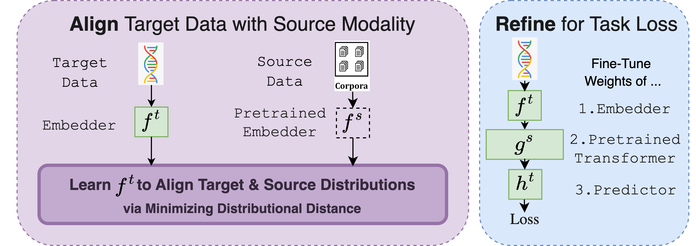

Jian Qian
AI Researcher
AI Design Department
Fudan University
Advisor: Patrick Yin Chiang
Google Scholar GitHub
Email: visionqj.a@gmail.com
Fudan University
Advisor: Patrick Yin Chiang
Google Scholar GitHub
Email: visionqj.a@gmail.com
Bio
Welcome to my website! I am a master student at the Fudan University advised by Prof. Patrick Yin Chiang.
My current research focus is the theoretical understanding of machine learning algorithms, often motivated by finding in 2D and 3D computer vision tasks.
I am also broadly interested in accelerating AI models and applying them to daily life.
Recently, I set up AI Trees to showcase the application of the advanced AI models in computer vision.
Previously, I was a machine learning engineer in SONY China Software Center advised by Dr. Joseph Salini.
From 2016 to 2018, I was an algorithm engineer in Smartsens Technology Co., Ltd. advised by Kevin Shao.
News
- Jun 2023: Greduater from Fudan University!
Selected Publications
For a full list of publications, see Research.

Cite Cross-Modal Fine-Tuning: Align then Refine
@misc{shen2023orca,
author = {Shen, Junhong and Li, Liam and Dery, Lucio M. and Staten, Corey and Khodak, Mikhail and Neubig, Graham and Talwalkar, Ameet},
title = {Cross-Modal Fine-Tuning: Align then Refine},
publisher = {arXiv},
year = {2023},
url = {https://arxiv.org/abs/2302.05738}
}Projects
For a full list of publications, see Updates.